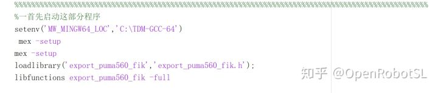

Home
本文转载自： https://zhuanlan.zhihu.com/p/264971858
Matlab代码GIT地址和相关文件下载
本人彩笔嘴笨，直接上过程。。。
如果有封装好的C++ dll文件，matlab想调用他的话，就需要配置编译器，这里直接推荐TDM-GCC。无脑简单傻瓜操作。
下图DLL是封装好的DLL文件，提供给matlab使用
配置好TDM-GCC编译器后启动下面代码，就可以了

启动结果
然后通过指针就可以动态调用DLL函数了！
TMD文件我会上传的GIT上，因为这个程序不好下，直接无脑create,默认C盘路径不要改，就OK了。
下载地址
1.首先是机器人工具箱下载地址9.10版本和10.3版本
OpenRobotSL：MatlabPeter机器人工具箱Robotics Toolbox 9.10https://pan.baidu.com/s/1VxWPLo3PCinsZzwDNt1kRw提取码：6mdu
2.下面是TDM_GCC C++编译器地址，我的双臂会用到这个文件
OpenRobotSL：matlab调用C++dll，需要安装编译器TDM-GCChttps://pan.baidu.com/s/1KPvc4dBLFcuayfcKSXPdmw提取码：uf6l
3.GITHUB地址
https://github.com/OpenRobotSLOpenRobotSL - Overview里面暂时包含三个内容得代码
首先是机器人工具箱教程代码
OpenRobotSL：Matlab官方机器人工具箱Robotics System Toolbox，官网翻译教程10-15OpenRobotSL：Robotics System Toolbox学习笔记（一）：简单建立一个机器人下一个是ROS配置文件
OpenRobotSL：大白菜的ROS笔记1最后是双臂仿真文件，其中DLL库是工业6轴库，可以工业使用哦
OpenRobotSL：Matlab双臂机器人建模仿真以后代码都会文章内添加，这次比较匆忙单独开了一个
======================================================================
我的测试结果及程序
下面是我测试的代码：